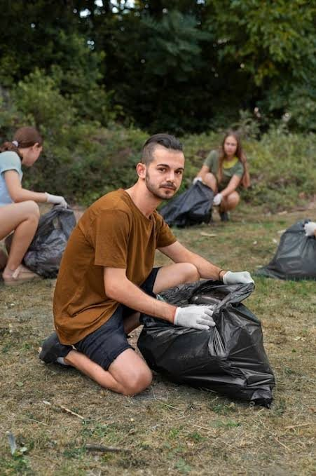
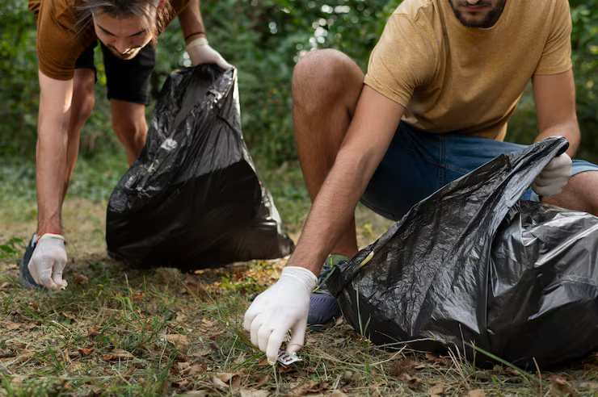

El ambiente es el espacio donde vivimos, donde se encuentran los seres vivos, el agua, el suelo, el aire y las plantas. Por eso es muy importante cuidarlo y protegerlo de la contaminación.
¿Por qué es importante cuidar el ambiente?
Para comprender mejor la importancia del cuidado ambiental, a continuación veremos algunas acciones que podemos realizar todos los días.

¿Qué podemos hacer?
Una de las formas más importantes de cuidar el ambiente es reciclar. Separamos los residuos orgánicos de los inorgánicos y colocamos los plásticos, papeles y vidrios en los contenedores correspondientes.
Además, debemos ahorrar energía apagando las luces y los aparatos electrodomésticos cuando no los usamos. También es importante ahorrar agua cerrando bien las canillas.
Plantar árboles es otra forma de cuidar el ambiente. Los árboles nos dan oxígeno y ayudan a reducir la contaminación del aire.
En conclusión, cuidar el ambiente es responsabilidad de todos. Con pequeñas acciones podemos hacer una gran diferencia para nuestro planeta.
